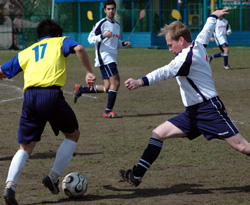
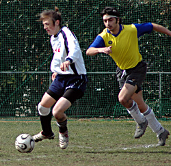
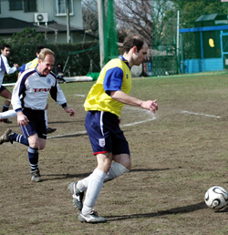

|
YC&AC, Sun 25th Feb. One of the coldest mornings I can remember this season as YCAC 2nds lined up against Maritzio, with the usual powerful wind blasting down the length of the pitch and the pitch looking increasingly like Oi-Futo Dai Ichi with a bad case of shingles. Maritizio are well known to be a handy team, having only been relegated from TML Division 1 in 2004/5 (along with perennial whingers BEFC). This season they are looking an outside bet for promotion and have had some notable results, not least a 3-1 whupping of 2nd place Vagabonds. And in Henry M. they have one of the Divisions top scorers (oh yes, we do our homework at the YCAC you know). They came into the game looking for 3 points to continue their promotion challenge.
In contrast YCAC2 have had a solid but not spectacular season. The squad had its ups and downs due to long term injuries (Alex, Rob, Martin to name a few) but have benefitted from the 1sts making some key signings in the winter transfer window.
The team for Sunday had a pleasingly familar look about it with Paul Wood back from a knee injury, Genki back from Denmark, Joe not working for a change, Peter back from a business trip and Nick back from Roppongi.
We won the toss and elected to play into the wind, on the basis that if we could defend that half we might get it easier in the 2nd when our legs started to tire. Not a bad tactic, as with Tom and Genki upfront we always knew we had a chance if we defended well. It's fair to say that YCAC were much the busier defence in the first half, with a combination of huge wind-assisted goal kicks and good movement from Maritzio causing constant problems. Fortunately they had not brought their shooting boots, as most shots whistled past the post or over the bar. With Kouka-san in goal we are always fairly relaxed about shots from 25 meters plus, as we would always back him to save them. Close-range chances were limited and we went in half-time 0-0.
Second half was a different story. The combination of Genki and Min Sung (later Tom) up front, and determined wing play from Joe, Ryuji and Per combined to produce several chances, at least one or two of which should have gone in. For the third quarter the Maritzio defence looked badly shaken and in truth that's when we should have taken our chance. But they are too good a side to stay like that, and by the last quarter they were once again putting attacks into our last 1/3. A string of corner kicks were well collected by Kouka-san under close examination. Peter and Viv dug deep in midfleld, Nick had one of his best games at right-back, so did Neil at left-back, and Woody was back as if he hadn't been away. In fact seconds before the end a Woody clearance thundered against his own post but ricocheted so far up the field the danger was quickly past. So an entertaning draw for us, I am sure a frustrating one for Maritzio. As usual very ably refereed by Paul.
Report by Steve McKie
|